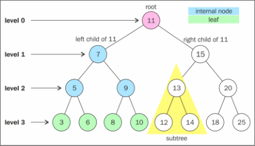
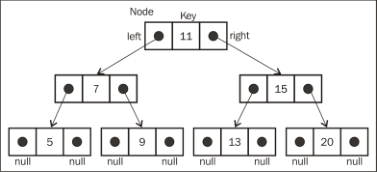
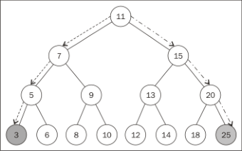
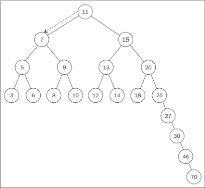

学习JavaScript数据结构与算法笔记-树
树，它属于非顺序数据结构，对于存储需要快速查找的数据非常有用。树是一种分层数据的抽象模型。
树的相关术语
一个树结构包含一系列存在父子关系的节点。每个节点都有一个父节点（除了顶部的第一个节点）以及零个或多个子节点：

位于树顶部的节点叫作根节点（11）。它没有父节点。树中的每个元素都叫作节点，节点分为内部节点和外部节点。至少有一个子节点的节点称为内部节点（7、5、9、15、13和20是内部节点）。没有子元素的节点称为外部节点或叶节点（3、6、8、10、12、14、18和25是叶节点）。
一个节点可以有祖先和后代。一个节点（除了根节点）的祖先包括父节点、祖父节点、曾祖父节点等。一个节点的后代包括子节点、孙子节点、曾孙节点等。例如，节点5的祖先有节点7和节点11，后代有节点3和节点6。
有关树的另一个术语是子树。子树由节点和它的后代构成。例如，节点13、12和14构成了上图中树的一棵子树。
节点的一个属性是深度，节点的深度取决于它的祖先节点的数量。比如，节点3有3个祖先节点（5、7和11），它的深度为3。
树的高度取决于所有节点深度的最大值。一棵树也可以被分解成层级。根节点在第0层，它的子节点在第1层，以此类推。上图中的树的高度为3（最大高度已在图中表示——第3层）。
二叉搜索树
二叉树中的节点最多只能有两个子节点：一个是左侧子节点，另一个是右侧子节点。
二叉搜索树（BST）是二叉树的一种，但是它只允许你在左侧节点存储（比父节点）小的值，在右侧节点存储（比父节点）大（或者等于）的值。
BinarySearchTree 类实现。首先，声明它的结构：1
2
3
4
5
6
7
8function BinarySearchTree() {
var Node = function(key){ //{1}
this.key = key;
this.left = null;
this.right = null;
};
var root = null; //{2}
}
二叉搜索树数据结构的组织方式：

和链表一样，将通过指针来表示节点之间的关系（术语称其为边）。在双向链表中，每个节点包含两个指针，一个指向下一个节点，另一个指向上一个节点。对于树，使用同样的方式（也使用两个指针）。但是，一个指向左侧子节点，另一个指向右侧子节点。因此，将声明一个 Node 类来表示树中的每个节点（行 {1} ）。键是树相关的术语中对节点的称呼。
声明一个变量以控制此数据结构的第一个节点。在树中，它不再是头节点，而是根元素（行 {2} ）。
树类要实现的方法:
- insert(key) ：向树中插入一个新的键。
- search(key) ：在树中查找一个键，如果节点存在，则返回 true ；如果不存在，则返回 false 。
- inOrderTraverse ：通过中序遍历方式遍历所有节点。
- preOrderTraverse ：通过先序遍历方式遍历所有节点。
- postOrderTraverse ：通过后序遍历方式遍历所有节点。
- min ：返回树中最小的值/键。
- max ：返回树中最大的值/键。
- remove(key) ：从树中移除某个键。
向树中插入一个键
下面的代码是用来向树插入一个新键的算法的第一部分：1
2
3
4
5
6
7
8this.insert = function(key){
var newNode = new Node(key); //{1}
if (root === null){ //{2}
root = newNode;
} else {
insertNode(root,newNode); //{3}
}
};
要向树中插入一个新的节点（或项），要经历三个步骤。
- 第一步是创建用来表示新节点的 Node 类实例（行 {1} ）。只需要向构造函数传递我们想用来插入树的节点值，它的左指针和右指针的值会由构造函数自动设置为 null 。
- 第二步要验证这个插入操作是否为一种特殊情况。这个特殊情况就是我们要插入的节点是树的第一个节点（行 {2} ）。如果是，就将根节点指向新节点。
- 第三步是将节点加在非根节点的其他位置。这种情况下，需要一个私有的辅助函数（行 {3} ），函数定义如下：
1
2
3
4
5
6
7
8
9
10
11
12
13
14
15var insertNode = function(node, newNode){
if (newNode.key < node.key){ //{4}
if (node.left === null){ //{5}
node.left = newNode; //{6}
} else {
insertNode(node.left, newNode); //{7}
}
} else {
if (node.right === null){ //{8}
node.right = newNode; //{9}
} else {
insertNode(node.right, newNode); //{10}
}
}
};
insertNode 函数会帮助我们找到新节点应该插入的正确位置。下面是这个函数实现的步骤。
- 如果树非空，需要找到插入新节点的位置。因此，在调用 insertNode 方法时要通过参数传入树的根节点和要插入的节点。
- 如果新节点的键小于当前节点的键（现在，当前节点就是根节点）（行 {4} ），那么需要检查当前节点的左侧子节点。如果它没有左侧子节点（行 {5} ），就在那里插入新的节点。如果有左侧子节点，需要通过递归调用 insertNode 方法（行 {7} ）继续找到树的下一层。在这里，下次将要比较的节点将会是当前节点的左侧子节点。
- 如果节点的键比当前节点的键大，同时当前节点没有右侧子节点（行 {8} ），就在那里插入新的节点（行 {9} ）。如果有右侧子节点，同样需要递归调用 insertNode 方法，但是要用来和新节点比较的节点将会是右侧子节点。
树的遍历
中序遍历
中序遍历是一种以上行顺序访问BST所有节点的遍历方式，也就是以从最小到最大的顺序访问所有节点。中序遍历的一种应用就是对树进行排序操作。实现如下：1
2
3this.inOrderTraverse = function(callback){
inOrderTraverseNode(root, callback); //{1}
};
inOrderTraverse 方法接收一个回调函数作为参数。回调函数用来定义我们对遍历到的每个节点进行的操作。由于我们在BST中最常实现的算法是递归，这里使用了一个私有的辅助函数，来接收一个节点和对应的回调函数作为参数（行 {1} ）。1
2
3
4
5
6
7var inOrderTraverseNode = function (node, callback) {
if (node !== null) { //{2}
inOrderTraverseNode(node.left, callback); //{3}
callback(node.key); //{4}
inOrderTraverseNode(node.right, callback); //{5}
}
};
要通过中序遍历的方法遍历一棵树，首先要检查以参数形式传入的节点是否为 null （这就是停止递归继续执行的判断条件——行 {2} ——递归算法的基本条件）。
然后，递归调用相同的函数来访问左侧子节点（行 {3} ）。接着对这个节点进行一些操作（ callback ），然后再访问右侧子节点（行 {5} ）。
先序遍历
先序遍历是以优先于后代节点的顺序访问每个节点的。先序遍历的一种应用是打印一个结构化的文档。
先序遍历和中序遍历的不同点是，先序遍历会先访问节点本身（行 {4} ），然后再访问它的左侧子节点（行 {3} ），最后是右侧子节点（行 {5} ），而中序遍历的执行顺序是： {3} 、 {4} 和 {5} 。
后序遍历
后序遍历则是先访问节点的后代节点，再访问节点本身。后序遍历的一种应用是计算一个目录和它的子目录中所有文件所占空间的大小。
后序遍历会先访问左侧子节点（行 {3} ），然后是右侧子节点（行 {5} ），最后是父节点本身（行 {4} ）。
你会发现，中序、先序和后序遍历的实现方式是很相似的，唯一不同的是行 {3} 、 {4} 和 {5} 的执行顺序。
搜索树中的值
在树中，有三种经常执行的搜索类型：
- 最小值；
- 最大值；
- 搜索特定的值。
搜索最小值和最大值
使用下面的树作为示例：

树最后一层最左侧的节点，会发现它的值为3，这是这棵树中最小的键。树最右端的节点（同样是树的最后一层），会发现它的值为25，这是这棵树中最大的
键。
因此，对于寻找最小值，总是沿着树的左边；而对于寻找最大值，总是沿着树的右边。
搜索一个特定的值
在BST中实现搜索的方法，实现如下：1
2
3
4
5
6
7
8
9
10
11
12
13
14
15
16this.search = function(key){
return searchNode(root, key); //{1}
};
var searchNode = function(node, key){
if (node === null){ //{2}
return false;
}
if (key < node.key){ //{3}
return searchNode(node.left, key); //{4}
} else if (key > node.key){ //{5}
return searchNode(node.right, key); //{6}
} else {
return true; //{7}
}
};
第一件事，是声明 search 方法。和BST中声明的其他方法的模式相同，使用一个辅助函数（行 {1} ）。
searchNode 方法可以用来寻找一棵树或它的任意子树中的一个特定的值。这也是为什么在行 {1} 中调用它的时候传入树的根节点作为参数。
在开始算法之前，先要验证作为参数传入的 node 是否合法（不是 null ）。如果是 null 的话，说明要找的键没有找到，返回 false 。
如果传入的节点不是 null ，需要继续验证。如果要找的键比当前的节点小（行 {3} ），那么继续在左侧的子树上搜索（行 {4} ）。如果要找的键比当前的节点大，那么就从右侧子节点开始继续搜索（行 {6} ），否则就说明要找的键和当前节点的键相等，就返回 true 来表示找到了这个键（行 {7} ）。
移除一个节点
先创建这个方法，使它能够在树的实例上被调用：1
2
3this.remove = function(key){
root = removeNode(root, key); //{1}
};
这个方法接收要移除的键并且它调用了 removeNode 方法，传入 root 和要移除的键作为参数（行 {1} ）。root 被赋值为 removeNode 方法的返回值。
removeNode 方法的复杂之处在于要处理不同的运行场景，当然也包括它同样是通过递归来实现的。removeNode 方法的实现：1
2
3
4
5
6
7
8
9
10
11
12
13
14
15
16
17
18
19
20
21
22
23
24
25
26
27
28
29
30
31
32
33
34
35var removeNode = function(node, key){
if (node === null){ //{2}
return null;
}
if (key < node.key){ //{3}
node.left = removeNode(node.left, key); //{4}
return node; //{5}
} else if (key > node.key){ //{6}
node.right = removeNode(node.right, key); //{7}
return node; //{8}
} else { //键等于node.key
//第一种情况——一个叶节点
if (node.left === null && node.right === null){ //{9}
node = null; //{10}
return node; //{11}
}
//第二种情况——一个只有一个子节点的节点
if (node.left === null){ //{12}
node = node.right; //{13}
return node; //{14}
} else if (node.right === null){ //{15}
node = node.left; //{16}
return node; //{17}
}
//第三种情况——一个有两个子节点的节点
var aux = findMinNode(node.right); //{18}
node.key = aux.key; //{19}
node.right = removeNode(node.right, aux.key); //{20}
return node; //{21}
}
};
行 {2} ，如果正在检测的节点是 null ，那么说明键不存在于树中，所以返回 null 。然后，要做的第一件事，就是在树中找到要移除的节点。因此，如果要找的键比当前节点的值小（行 {3} ），就沿着树的左边找到下一个节点（行 {4} ）。如果要找的键比当前节点的值大（行 {6} ），那么就沿着树的右边找到下一个节点（行 {7} ）。
如果找到了要找的键（键和 node.key 相等），就需要处理三种不同的情况。
移除一个叶节点
第一种情况是该节点是一个没有左侧或右侧子节点的叶节点 —— 行 {9} 。在这种情况下，要做的就是给这个节点赋予 null 值来移除它（行 {9} ）。仅仅赋一个 null 值是不够的，还需要处理指针。在这里，这个节点没有任何子节点，但是它有一个父节点，需要通过返回 null 来将对应的父节点指针赋予 null 值（行 {11} ）。
现在节点的值已经是 null 了，父节点指向它的指针也会接收到这个值，这也是要在函数中返回节点的值的原因。父节点总是会接收到函数的返回值。另一种可行的办法是将父节点和节点本身都作为参数传入方法内部。
如果回头来看方法的第一行代码，会发现在行 {4} 和行 {7} 更新了节点左右指针的值，同样也在行 {5} 和行 {8} 返回了更新后的节点。
移除有一个左侧或右侧子节点的节点
第二种情况，移除有一个左侧子节点或右侧子节点的节点。这种情况下，需要跳过这个节点，直接将父节点指向它的指针指向子节点。
如果这个节点没有左侧子节点（行 {12} ），也就是说它有一个右侧子节点。因此把对它的引用改为对它右侧子节点的引用（行 {13} ）并返回更新后的节点（行 {14} ）。如果这个节点没有右侧子节点，也是一样——把对它的引用改为对它左侧子节点的引用（行 {16} ）并返回更新后的值（行 {17} ）。
移除有两个子节点的节点
第三种情况，也是最复杂的情况，那就是要移除的节点有两个子节点——左侧子节点和右侧子节点。要移除有两个子节点的节点，需要执行四个步骤。
- (1) 当找到了需要移除的节点后，需要找到它右边子树中最小的节点（它的继承者——行{18} ）。
- (2) 然后，用它右侧子树中最小节点的键去更新这个节点的值（行 {19} ）。通过这一步，改变了这个节点的键，也就是说它被移除了。
- (3) 但是，这样在树中就有两个拥有相同键的节点了，这是不行的。要继续把右侧子树中的最小节点移除，毕竟它已经被移至要移除的节点的位置了（行 {20} ）。
- (4) 最后，向它的父节点返回更新后节点的引用（行 {21} ）。
findMinNode 方法的实现和 min 方法的实现方式是一样的。唯一不同之处在于，在 min 方法中只返回键，而在 findMinNode 中返回了节点。
更多关于二叉树的知识
BST存在一个问题：取决于你添加的节点数，树的一条边可能会非常深；也就是说，树的一条分支会有很多层，而其他的分支却只有几层，如下图所示：

这会在需要在某条边上添加、移除和搜索某个节点时引起一些性能问题。为了解决这个问题，有一种树叫作阿德尔森-维尔斯和兰迪斯树（AVL树）。AVL树是一种平衡二叉搜索树，意思是任何一个节点左右两侧子树的高度之差最多为1。也就是说这种树会在添加或移除节点时尽量试着成为一棵完全树。
另一种你同样应该学习的树是红黑树，它是一种特殊的二叉树。这种树可以进行高效的中序遍历,此外，堆也值得学习。
可参考：
请要相信我，30分钟让你掌握AVL树（平衡二叉树）
最容易懂得红黑树
堆——神奇的优先队列(上)
堆——神奇的优先队列（下）